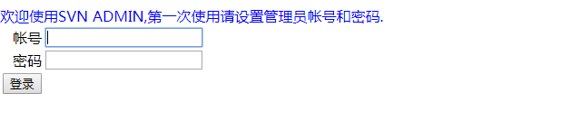

1 安装环境
Linux CentOS6
2 使用账户
root 根用户。此用户为系统根用户，拥有最高权限。SVN 服务需要频繁访问系统资源，
使用 root 用户可以避免一些不必要的麻烦。且 SVN 服务器通常为独立服务器，使用 root 用
户可以更好的管理服务器资源。
3 安装 Apache HTTP Server
3.1前置准备（可选）
在安装前，可以更新当前操作系统，减少漏洞。
更新命令 ： yum update
更新系统后，需要重新启动操作系统。
重启命令 ： reboot
3.2安装 Apache HTTP Server
命令 ： yum install httpd httpd-devel -y
3.3修改配置
命令 ： vi /etc/httpd/conf/httpd.conf
找到 ServerName 配置位置（vi 编辑器命令模式下输入：/ServerName），修改内容如下：
ServerName localhost:80
3.4修改防火墙配置
开放 80 端口访问权限。
命令 ： vi /etc/sysconfig/iptables
增加下述内容：
-A INPUT -m state --state NEW -m tcp -p tcp --dport 80 -j ACCEPT
修改后，重启防火墙服务，命令： service iptables restart
3.5启动 Apache HTTP Server 服务
命令 ： service httpd start
3.6测试访问
使用浏览器访问对应服务。假如使用的 Linux 虚拟机 IP 为：192.168.3.100。访问地址
为：http://192.168.120.159/。访问结果如下：
 4 安装 SVN 服务
4.1停止 Apache HTTP Server 服务
命令 ： service httpd stop
4.2安装 svn 模块
命令 ： yum install mod_dav_svn subversion
4.3检查 svn 模块安装结果
当 svn 模块安装成功后，在/etc/httpd/modules/目录中会有对应信息产生，可使用
命令查看：ls /etc/httpd/modules | grep svn
结果如下：
4 安装 SVN 服务
4.1停止 Apache HTTP Server 服务
命令 ： service httpd stop
4.2安装 svn 模块
命令 ： yum install mod_dav_svn subversion
4.3检查 svn 模块安装结果
当 svn 模块安装成功后，在/etc/httpd/modules/目录中会有对应信息产生，可使用
命令查看：ls /etc/httpd/modules | grep svn
结果如下：
mod_authz_svn.so
mod_dav_svn.so
也可以使用 svn 模块命令查看，命令为： svn --version
结果如下：
svn, version 1.6.11 (r934486)
compiled Aug 17 2015, 08:37:43
Copyright (C) 2000-2009 CollabNet.
Subversion is open source software, see http://subversion.tigris.org/
This product includes software developed by CollabNet (http://www.Collab.Net/).
The following repository access (RA) modules are available:
* ra_neon : Module for accessing a repository via WebDAV protocol using Neon.
- handles 'http' scheme
- handles 'https' scheme
* ra_svn : Module for accessing a repository using the svn network protocol.
- with Cyrus SASL authentication
- handles 'svn' scheme
* ra_local : Module for accessing a repository on local disk.
- handles 'file' scheme
4.4为 svn 仓库创建主目录
本示例将 svn 仓库主目录保存在系统根目录下，可根据具体情况修改。
mkdir /svn/
4.5修改 svn 配置信息
svn 配置文件保存在目录/etc/httpd/conf.d/目录中，配置文件为：subversion.conf
此配置文件是在安装 mod_dav_svn 时自动创建的。
命令 ： vi /etc/httpd/conf.d/subversion.conf
在配置文件中增加下述内容：
#Include /svn/httpd.conf
<Location /svn/> # 本地仓库目录位置。4.4 节点创建的位置
DAV svn # 模型简述
SVNListParentPath on # 开启上级目录列表能力
SVNParentPath /svn # 上级目录列表根目录。 4.4 节点创建的位置
AuthType Basic # 授权类型，
AuthName "Subversion repositories" # 拥有者名称
AuthUserFile /svn/passwd.http # 拥有者用户文件命名
AuthzSVNAccessFile /svn/authz # 用户授权文件命名
Require valid-user
</Location>
RedirectMatch ^(/svn)$ $1/
4.6创建密码文件和授权文件
命令 ：
touch /svn/passwd.http
touch /svn/authz
5 安装 MySQL 数据库
此数据库专为 SVN 服务器提供数据存储。与业务系统数据库分离。
5.1检查当前系统中是否安装了 MySQL
命令 ： rpm -qa | grep mysql
5.2安装 MySQL
命令 ： yum install mysql-server mysql mysql-devel
5.3启动 MySQL 服务
命令 ： service mysqld start
在安装权限 MySQL 数据库后，第一次启动需要初始化数据库基础信息。
5.4检查 MySQL 服务状态
命令 ： service mysqld status
5.5修改防火墙配置
开放 3306 端口访问权限。
命令 ： vi /etc/sysconfig/iptables
增加下述内容：
-A INPUT -m state --state NEW -m tcp -p tcp --dport 3306 -j ACCEPT
修改后，重启防火墙服务，命令： service iptables restart
5.6设置 MySQL 数据库 root 用户初始密码
命令 ： mysqladmin -uroot password 'yourPassword'
5.7为 MySQL 数据库 root 用户授权
在默认情况下，MySQL 数据库中的 root 用户只能本地访问。需要为此用户授予远程访
问权限，否则无法在远程或其他应用中使用 root 用户访问 MySQL 数据库。
5.7.1 连接 MySQL 数据库
命令 ： mysql -uroot -p
5.7.2 授权
MySQL 中的命令 ：
GRANT ALL PRIVILEGES ON *.* TO 'root'@'%' IDENTIFIED BY '你的密码' WITH GRANT OPTION;
FLUSH PRIVILEGES;
5.7.3 查看授权信息
MySQL 中的命令 ：
select user, host from mysql.user;
其中 user 为 MySQL 数据库用户名， host 为可访问的地址（%代表所有位置都可访问）。
6 安装 svnadmin
6.1简介
Svn Admin 是一个 Java 开发的管理 Svn 服务器的项目用户的 web 应用。安装好 Svn 服务
器端好，把 Svn Admin 部署好，就可以通过 web 浏览器管理 Svn 的项目，管理项目的用户，
管理项目的权限。使得管理配置 Svn 简便，再也不需要每次都到服务器手工修改配置文件。
本课程中使用的版本为：3.0.5
svnadmin 资源在 googlecode 平台中，不易访问下载，课程附件中附有资源。
网址为： https://code.google.com/p/svnadmin
6.2svnadmin 的优点
多数据库：Svn 项目配置数据保存在数据库，支持所有数据库（默认 MySQL/Oracle/SQL
Server）。
多操作系统：支持 Window,Linux 等操作系统。
权限控制：管理员可以随意分配权限、项目管理员可以管理项目成员、成员只能查看和
修改自己的密码。
支持多项目、多用户、多用户组 Group（默认带有“项目管理组”、“项目开发组”、“项目
测试组”）。
安全：密码加密保存。
多协议：支持 svn 协议和 http 协议(从 2.0 开始支持 Apache 服务器单库方式，从 3.0 开
始支持 Apache 多库方式)
仓库浏览(从 3.0.2 开始)
多语言(从 3.0.2 开始)
6.3安装 Tomcat
svnadmin 是使用 java 编写的一个 WAR 应用，需要提供一个 Java WEB 中间件才能正常
使用，本课程使用 Tomcat7 作为部署容器。本课程中 tomcat 安装位置为：/root/upload/目录。
Tomcat 安装必须依赖 JDK，在 Maven 课程已安装过，此处省略。
6.3.1 解压缩
命令 ： tar -zxvf apache-tomcat-8.0.52.tar.gz -C /usr/local
6.3.2 重命名目录
命令 ： mv apache-tomcat-8.0.52-svnadmin tomcat-svnadmin
6.3.3 修改 tomcat 配置（可选）
命令 ： vi /usr/local/tomcat-svnadmin/conf/server.xml
修改内容如下：
<Server port="8005" shutdown="SHUTDOWN">
<Connector port="8080" protocol="HTTP/1.1"
connectionTimeout="20000"
redirectPort="8443" URIEncoding="UTF-8"/>
6.3.4 修改防火墙配置
开放 8080 端口访问权限。
命令 ： vi /etc/sysconfig/iptables
增加下述内容：
-A INPUT -m state --state NEW -m tcp -p tcp --dport 8080 -j ACCEPT
修改后，重启防火墙服务，命令： service iptables restart
6.4部署 svnadmin 应用
将 svnadmin 应用上传到 Tomcat/webapps/目录中，并解压缩svnadmin-3.0.5.zip文件到svnadmintmp文件夹中，
包含 db 目录，svnadmin.war 应用。db 目录中保存的是 svnadmin 需要使用的数据库脚本文
件。
解压缩命令 ： unzip svnadmin.war -d svnadmin
6.5修改 svnadmin 应用配置
命令 ： vi /usr/local/tomcat-svnadmin/webapps/svnadmin/WEB-INF/jdbc.properties
修改内容如下：
db=MySQL
#MySQL
MySQL.jdbc.driver=com.mysql.jdbc.Driver
MySQL.jdbc.url=jdbc:mysql://127.0.0.1:3306/svnadmin?characterEncoding=utf-8
MySQL.jdbc.username=root
MySQL.jdbc.password=root
6.6创建 database&导入 SQL 脚本
6.6.1 连接 MySQL
命令 ： mysql -uroot -p
6.6.2 创建 database
MySQL 中 的 命 令 ： create database svnadmin default charset utf8 collate utf8_general_ci;
这里的 database 命名需要和应用中配置文件 jdbc.properties 内的 url 对应。
6.6.3 使用 database
MySQL 中的命令 ： use svnadmin
6.6.4 执行脚本文件
本示例中 db 目录保存在/tomcat-svnadmin/svnadmintmp/目录中。
在svnadmintmp文件夹中找到db目录
进入到MySQL 中然后敲命令 ：
source svnadmintmp/db/mysql5.sql
source svnadmintmp/db/lang/en.sql
6.7启动 httpd 服务
命令 ： service httpd start
6.8启动 Tomcat
命令 ：
/root/upload/tomcat7/bin/startup.sh & tail -f /root/upload/tomcat7/log/catalina.out
如果 Tomcat 是第一次使用，catalina.out 日志文件不存在，无法直接输出日志信息。
6.9测试访问 svnadmin 应用
浏览器访问 ： http://192.168.120.159:8080/svnadmin
结果如下：
